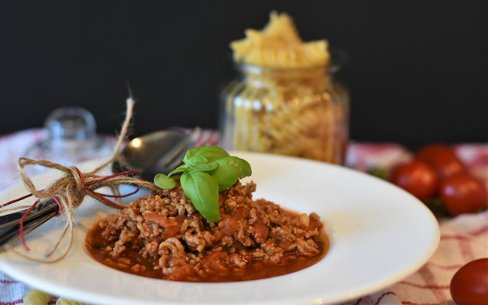

Bolognese

Heart Warming
This hearty, meaty, and luscious sauce will warm your heart. Every time I make this dish, something magical happens, it is hard to explain but it is like being hit in the chest with cupids arrow. Which I suppose, makes this perfect to make for a date, or romantic interest.
Ingredients
- 2celery sticks
- 2 carrots
- 1 onion
- 150-200g of pancetta (or bacon)
- 500g of ground beef
- 500g of ground pork
- 300g tomato paste
- 1-2 cups of chicken stock
- 1 cup of milk
- 1-2 glasses of wine (chardonnay)
- 1-2 tablespoons butter
- 2 tablespoons oil
- 3 bay leaves
- 3 sprigs of fresh rosemary
- salt and pepper to taste